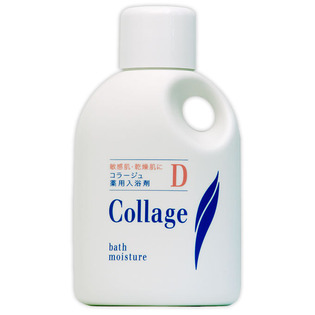

返回列表
产品名称：コラージュD入浴剤

持田ヘルスケア コラージュD入浴剤 ５００ｍｌ（医薬部外品）
メーカー 持田ヘルスケア
JANコード 4987767625805
商品の特徴
○入浴後シャワーや上がり湯で洗い流さないほうがより効果的です。
○熱いお湯より、ぬるめのお湯で長めに入浴してください。
成分・分量
＜表示指定成分＞
パラベン、トコフェロール、香料
＜主成分＞
コメ胚芽油、グリチルリチン酸ジカリウム、コレステロール（油性保護成分）、ヒドロキシステアリン酸コレステリル（油性保護成分）、スクワラン（油性成分）
用法及び用量
＜使用方法＞
浴槽の湯（200L）に、本品20mL（キャップの内側の線まで）の割合で入れて溶かし、よくかき混ぜてご使用ください。